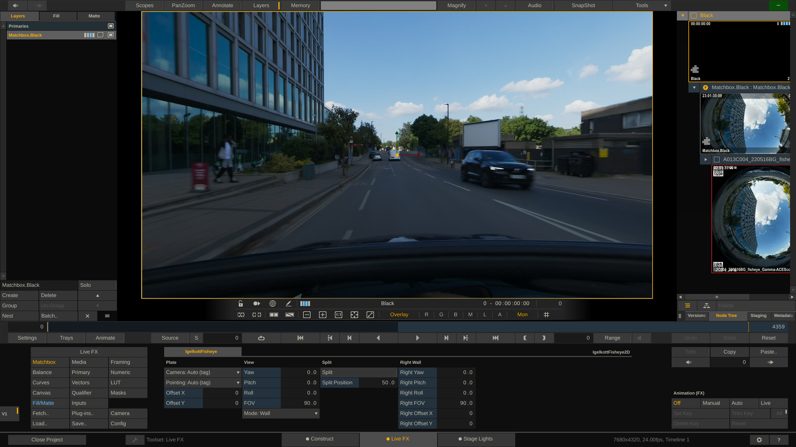
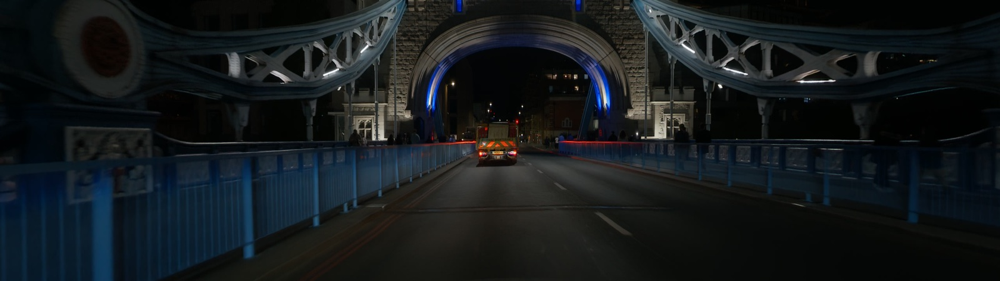
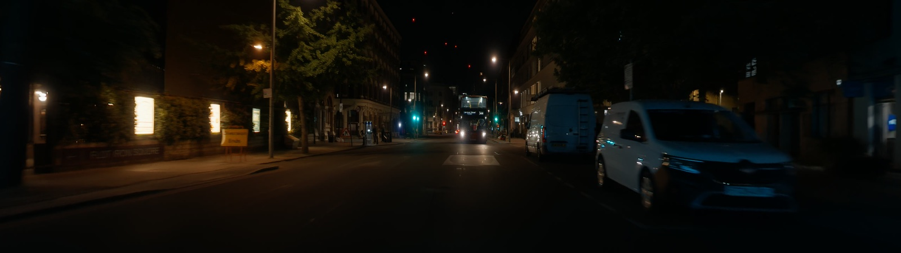
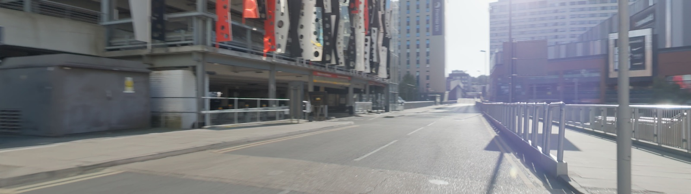
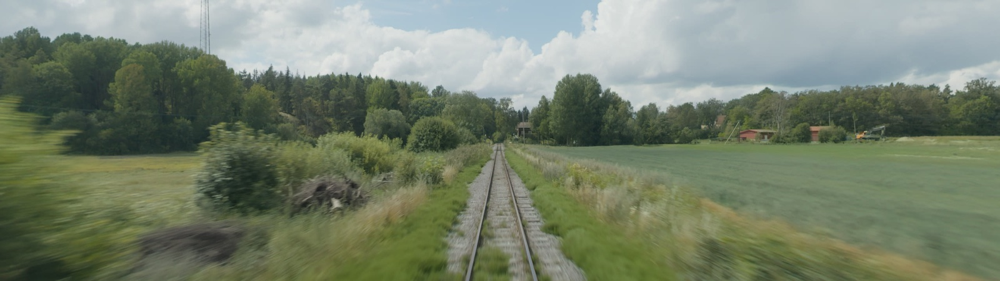

On the same machine, the node plays 2.5 to 4.7 times faster than the equirect route
Free Run plays as fast as the machine allows. With the node, both computers clear 100 fps on an 8 × 2K wall (7680 × 2160) and 90 on a 15360 × 2160 wall. Through Eq->2D, the 16K equirect decodes at 42 fps on Windows and the transform halves that to 23, short of the plate's 25.

An hour of fisheye fits in 2.6 TB. The same hour as equirect needs 6.6 TB
NotchLC is the codec Live FX plays fastest, and it is where the equirect gets heavy: 2.5× the fisheye. One 8 TB drive holds three hours of fisheye or a little over one hour of equirect. The plates come as ProRes 4444 masters, and the fisheye master is the smallest file of all; there the equirect is 1.3× larger.
TB per hour (90,000 frames), mean and range over the nine free demo plates. Scale 0–8 TB.
| Format | Per frame | Read at 25 fps | Per hour | On an 8 TB drive |
|---|---|---|---|---|
| NotchLC fisheye | 28.7 MB | 718 MB/s | 2.59 TB | 3 h 5 min |
| NotchLC equirect 16K | 73.0 MB | 1,825 MB/s | 6.57 TB | 1 h 13 min |
| ProRes 4444 fisheye | 19.5 MB | 489 MB/s | 1.76 TB | 4 h 33 min |
| ProRes 4444 equirect 16K | 26.2 MB | 654 MB/s | 2.35 TB | 3 h 24 min |
A fast Gen 4 drive keeps up
We tested the same Corsair drive in the Mac and in the Windows workstation. It reads as fast with APFS as with NTFS. An older Gen 3 drive still plays the fisheye, but not the equirect. The plate needs 25 frames a second.
| Drive | Reads | Fisheye frames/s (25 needed) | Equirect frames/s (25 needed) |
|---|---|---|---|
| Mac · Corsair MP600 PRO NH 8 TB, APFS | 4.6–6.9 GB/s | 147–242 | 70–105 |
| Windows · same drive, NTFS, Gen 4 | 5.3–6.2 GB/s | 175–270 | 64–110 |
| Older PC · Intel 660p, Gen 3 | 1.3–1.7 GB/s | 54–75 | 15–24 |
NotchLC files read from the drive alone, outside Live FX. Each range runs over the nine free demo plates.
One resample keeps more of the plate
The equirect route resamples twice: fisheye to equirect, then equirect to wall. IgelkottFisheye goes from the fisheye to the wall in one step. MTF50 is the finest detail that keeps half its contrast, in cycles per wall pixel; higher is sharper.
Cycles per wall pixel, Venice 2 plates. IgelkottFisheye first, a 16K equirect of the same plate through Eq->2D second; at the horizon, the middle of the four directions. The node's MTF50 comes from a slanted edge drawn through the node (ISO 12233). The equirect route is the node's value times the ratio of the two routes' fine detail, measured on all nine plates. Up and down, the plate itself sets the limit for both routes (about 22 plate pixels per degree, spread over 43 wall pixels), so the gain is smaller there.
Every plate tells the node what it is
A pixel tag in each plate names the camera and which way the lens pointed: up (zenith, the car plates) or down (nadir, the plates shot from the air). The node reads it, so Camera and Pointing stay on Auto (tag), and the two nadir plates, A001C016 and A011C001, come out the right way up. A plate without the tag is not played. Each still is the whole 8 × 2K wall (7680 × 2160), 90° across: one per plate, and the ninth, A011C001, opens this page.
The node never touches colour. The plate stays in ACEScct all the way to the wall, so you pick the output your LED volume runs: PQ, HLG or SDR. The stills here are converted to SDR for the web.








What you see on the wall is what the lens saw
Every release is drawn on a real graphics card and compared pixel by pixel with the lens model, in both Live FX and PIXERA. NotchLC keeps the picture too: the encoded plates stay within 3.7 ten-bit code values (of 1023) of the ProRes master, frame for frame.
| Check | Result |
|---|---|
| Every pixel against the lens model, Live FX and PIXERA | 129 cases pass |
| LED canvases at full size: 4K, DCI 4K, 8K, 15360 × 2160 and 16384 × 2160 | 55 cases pass |
| Sharpness (MTF50), three views, across and up-down | within 0.02 of the model |
| PIXERA against Live FX | within 0.0001 (pixel values 0–1) |
| NotchLC against the ProRes master, 18 files | 0 to +3.7 ten-bit code values |
A black base the size of the wall, the node on top
A Live FX composite takes the size of its first shot. Put the plate first and a wall wider than the plate is cut to the plate's width. So the base is a black shot the size of the wall, and the node sits on it with the plate as its input.
Format = the wall. Frame rate = the plate or your volume's: a 25 fps plate plays in a 24 fps project too. Color Management on, ACES 1.1, ACEScct.
Construct › Filler › Black in the first slot. Live FX menu › Shot Length Out = plate length − 1. Media › ACEScg (AP1) / ACEScct.
Import Clips, answer No to the size question, then Media › ACEScg (AP1) / ACEScct. Live FX suggests Rec709 / 2.4, which looks flat and grey.
On the black shot: Plug-ins › Matchbox › IgelkottFisheye2D (the node's file name) › Apply On Layer. Then Fetch.. and drag the plate into the input called Fisheye.
Give the same size to three things: the timeline, the black shot and the node.
| Wall | Size | Outputs | Mode |
|---|---|---|---|
| 4K | 3840 × 2160 | 1 × 4K | Wall |
| 8 × 2K | 7680 × 2160 | 2 × 4K in a row | Wall |
| 8K | 7680 × 4320 | 2 × 2 4K | Wall |
| Wide | 15360 × 2160 | 4 × 4K in a row | Equirect (360°) |

Put a plate on your wall
IgelkottFisheye 0.22 for Assimilate Live FX and PIXERA. One zip for the Mac, one for Windows. Free to use, also commercially, for playing Igelkott plates.
- Assimilate Live FX on a Mac or Windows (tested with 9.9), or PIXERA on Windows.
- Igelkott plates. The nine demo plates are free.
- For an 8K wall and up: a fast Gen 4 drive. Tested on a Mac Studio (M3 Ultra) and an AMD Radeon RX 9070 XT.